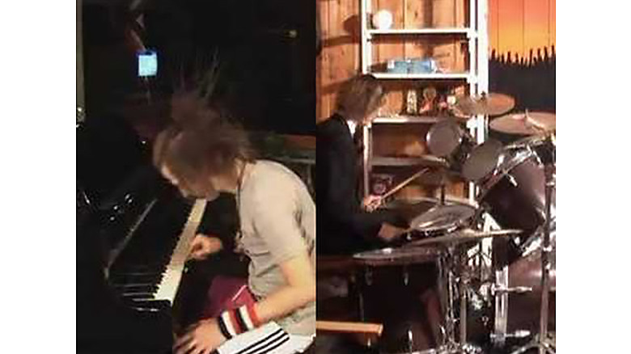

idea

Lasse Gjertsen
https://www.youtube.com/watch?v=JzqumbhfxRo-どんな人
ノルウェーのアニメーターです。Youtubeに作品を投稿しています。 昔からこの映像作品が好きなので紹介します。
-解説
映像の短いカットを編集して、ストップモーションアニメのような表現を行っています。 映像には、作者が扮したピアニストとドラマーが映り、 それぞれがお互いの専門ではない楽器を演奏し、 それを映像編集の力でみごとにセッションしあうという作品です。 文章だと面白おかしさが伝わらないので興味を持った方はみてください。
-好きなところ
編集の力によって、ドラマーが人差し指だけでピアノを弾ききるところが好きです。 動画を切り貼りして一つの映像としてみせる手法は面白いなと思いました。